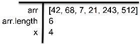
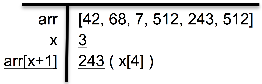
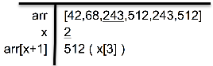
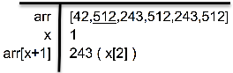

When working through a set of looping instructions with an array, a T-diagram can be especially useful. Let’s do exactly that, with the following code and input array.
var arr = [42,68,7,21,243,512];
for (var x = arr.length-2; x > 1; x--) {
arr[x - 1] = arr[x + 1];
}
console.log(arr);
console.log(x);// Does x exist out here?

As we enter the loop for the first time, here is our T-diagram:

We enter the loop (because x > 1) then set arr[x–1] (or arr[3], which is currently 21) to become arr[x+1] (arr[5], or 512). Accordingly, within our diagram in the line for arr, we change the 21 to 512. Then x decrements, so we change that value in our diagram as well, from 4 to 3. Because we see that we will reference arr[x+1] repeatedly, we add that to our T-diagram as well, with a current value of 243. We need to remember to update this, each time we change x. Our updated T-diagram is as follows, as we return to loop’s beginning, to evaluate whether to reenter:

Because x > 1, we indeed reenter the loop. We now set arr[x-1] (arr[2], currently 7) to become arr[x+1], which is already in our diagram (243). Then x decrements to 2, so we must update our arr[x+1] reference: it is arr[3], which is 512. We now return to the FOR loop’s beginning. To the right is our updated T-diagram, as we check whether to reenter the loop:

You can probably complete the exercise on your own at this point, but we’ll continue onward for completeness. Again x > 1, so we do in fact reenter. Again, we set arr[x-1] (arr[1], currently 68) to become arr[x+1] (512 in our diagram). We decrement x to 1 and update our arr[x+1] reference to 243 (although ultimately we won’t need this). Returning to our FOR loop’s beginning, here is our updated T-diagram at this point:
Looking now at x, we see we will not reenter the FOR. We will console.log both arr and x. The final value of arr is [42,512,243,512,243,512]. Yes, x has meaning outside the FOR: a value of 1.
We hope this second walkthrough shows the clarity that T-diagrams can bring when iterating arrays.
Chapter 3 – Arrays
Here are the concepts/methods we’ve discussed; some or all will be used in this chapter’s challenges. As always, don’t use built-in array methods.
for / while loopsArray.pop() & push()avoid sparseness
arrays grow: arr.length == lastIdx-1if / else statements
can contain different data types in JSarrays are objects, passed by reference (ptr)
Array: Remove Negatives
Implement removeNegatives() that accepts an array, removes negative values, and returns the same array (not a copy), preserving non-negatives’ order. As always, do not use built-in array functions.
Second: don’t use nested loops.
Array: Second-to-Last
Return the second-to-last element of an array. Given [42,true,4,"Kate",7], return "Kate". If array is too short, return null.
Array: Nth-to-Last
Return the element that is N-from-array’s-end. Given ([5,2,3,6,4,9,7],3), return 4. If the array is too short, return null.
Array: Second-Largest
Return the second-largest element of an array. Given [42,1,4,Math.PI,7], return 7. If the array is too short, return null.
Array: Nth-Largest
Liam has "N" number of Green Belt stickers for excellent Python projects. Given arr and N, return the Nth-largest element, where (N-1) elements are larger. Return null if needed.
Credit Card Validation
The Luhn formula is sometimes used to validate credit card numbers. Create the function isCreditCardValid(digitArr) that accepts an array of digits on the card (13-19 depending on the card), and returns a boolean whether the card digits satisfy the Luhn formula, as follows:
1) Set aside the last digit; do not include it in these calculations (until step 5);
2) Starting from the back, multiply the digits in odd positions (last, third-to-last, etc.) by 2;
3) If any results are larger than 9, subtract 9 from them;
4) Add all numbers (not just our odds) together;
5) Now add the last digit back in – the sum should be a multiple of 10.
For example, when given digit array [5,2,2,8,2], after step 1) it becomes [5,2,2,8], then after step 2) it is [5,4,2,16]. Post-3) we have [5,4,2,7], then following 4) it becomes 18. After step 5) our value is 20, so ultimately we return true. If the final digit were any non-multiple-of-10, we would instead return false.
Chapter 3 – Arrays